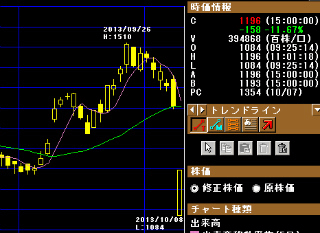
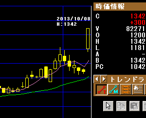
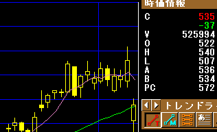

ヤフー出店に手数料無料化の動き...
孫さんがヤフーショッピングとヤフオクの手数料を無料化にするE-コマース革命をはじめるようで、市場の株価にも動きが出ているようです。
まず、ライバルである楽天ショッピング(4755)の株価ですが、本日は大幅に窓を開けて値を下げています。楽天での出店手数料は高いといわれていますが、ヤフーの手数料無料化によって出店者が流れてしまい、ネガティブな影響を受けるとの見方が強いようです。
【楽天(4755)】

次に、ヤフー関連のアフィリエイトといえばバリューコマース(2491)ですが、こちらの株価はストップ高になっています。出店手数料を無料化にするぶん、広告収入の増大を見込んでいるとの見方からバリュコマが買われたようです。
【バリューコマース(2491)】

そして本体のヤフー(4689)ですが、手数料無料化のぶん減収となるとの見込みで売られています。
【ヤフー(4689)】

正直、楽天がここまで下げるとは思わなかったのですが、今月は米国のデフォルト問題などもありますし、リスクオフといった感じなのでしょうか。売ろうかどうか迷っている際にネガティブな要因が出て狼狽売りという形になったのかもしれません。
個人的にネットでお買いものをする際は、私は楽天ショッピングをメインにしています。なにぶん、金融関連と連動しているので安心して使えるという印象が強いです。
銀行口座は個人と個人事業、法人と３種類を楽天で開設していますし、ネット証券も楽天ですし、クレジット関連も楽天です。ポイントも楽天アフィリで年間数十万程度はゲットしてますので、お買い物はポイントのみで済むケースが多いです。
ただ、今後の行動としましては、「楽天で商品を検索 → 楽天ショップでの価格チェック → 同じ店のヤフーショッピングでの価格もチェック」というパターンになるかと思います。
両ショッピングの価格を比較してみて、手数料無料化の分、ヤフーショッピングが大幅に安くなっていたらそちらで購入するでしょうけれども、同じような価格ならやはり楽天での購入になる気がします。
ただ、いずれ、時間とともに手数料のかからないヤフーショッピングのみで運営する店舗が出てきますと、出店者が大幅にヤフーに流れるかもしれません。以前、ドコモから孫さんのソフトバンクへ利用者が流れたように、ネットショッピングも同じような流れになる可能性も高いです。
ただ、出店者にとってのメリットが高くても、利用者にとってのメリットはそれほど多くない気もします。今後も注目していきたいと思います。